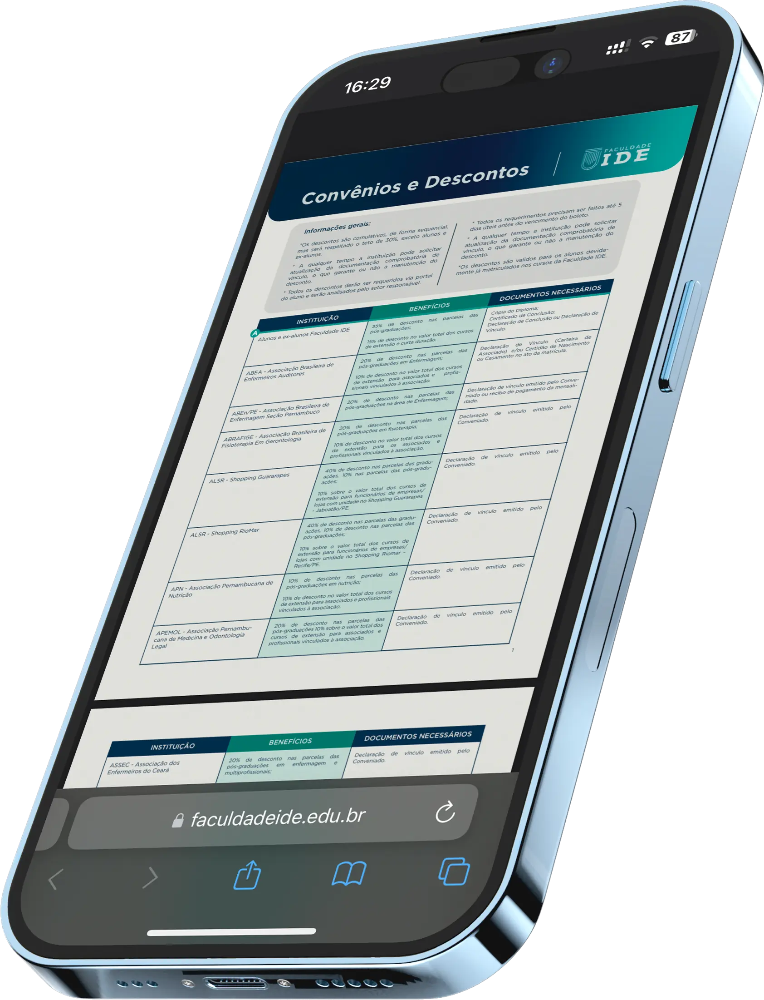

Carga horária
360 horas

A Pós-Graduação em Aleitamento Materno e Banco de Leite Humano forma profissionais capazes de promover, proteger e apoiar a amamentação com base científica e prática humanizada, atuando desde o manejo clínico até a gestão de bancos de leite humano.
Com aulas ao vivo, corpo docente de referência nacional e internacional e metodologia voltada para a atuação real no SUS e na saúde suplementar, o curso prepara você para os desafios da saúde materno-infantil.
360 horas
12 meses
11 e 12 de Julho de 2026
100% EAD — Aula ao vivo
Aula ao vivo
Como funcionam as aulas e atividades avaliativas · Ementa das disciplinas · Ambiente Virtual de Aprendizagem · Perguntas frequentes
Baixe o guia do curso
Michelle dos Santos
Terapia Ocupacional
Sobre as aulas, tem sido uma experiência incrível e enriquecedora até o momento. Com profissionais de alta qualidade e ótima didática, acho que o curso conta com uma grade de aulas bem completa. Tenho gostado bastante!
As aulas acontecem ao vivo, por meio da plataforma Zoom, permitindo interação direta entre alunos e professores. Além dos encontros ao vivo, os alunos também têm acesso a conteúdos complementares na plataforma virtual de aprendizagem, com materiais de apoio e atividades.
Recomendamos a participação ao vivo para aproveitar as discussões com o professor e os colegas. No entanto, todas as aulas ficam gravadas na plataforma, permitindo que o aluno assista posteriormente caso não possa participar no horário da transmissão.
Sim! Todos os módulos contam com atividades avaliativas, que fazem parte do processo de aprendizagem e da composição da carga horária do curso.
Não! Este curso não exige TCC. A certificação é obtida mediante o cumprimento da carga horária obrigatória do curso e aprovação nas atividades avaliativas previstas.
Os alunos têm acesso a uma plataforma virtual de aprendizagem, onde ficam disponíveis os conteúdos complementares, atividades, materiais de apoio e as gravações das aulas.
Sim! Além dos conteúdos disponibilizados na plataforma, os alunos também têm acesso a uma biblioteca virtual, com diversos títulos e materiais acadêmicos para apoiar os estudos ao longo da especialização.
Sim! O curso é uma Pós-Graduação Lato Sensu, com certificado emitido pela Faculdade IDE, instituição de ensino superior credenciada, seguindo as normas do Ministério da Educação (MEC). Por isso, o certificado possui validade em todo o território nacional.